Week 9 多个随机变数之和的概率分布
9.1 随机变数之和
- Z = X + Y 的几率分布？
- Ex: 老张面店只卖牛肉面跟豆腐脑已知每天的面销量 𝑿碗与豆腐脑销量𝒀碗的联合机率分布 pX,Y(x,y). 兄弟们约老张收摊后喝酒小聚。老婆规定老张洗完碗后才能赴约。 请问老张洗碗数量的机率分布是?
- 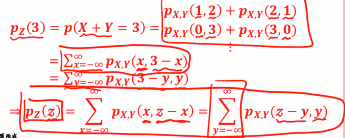
- 第二行公式: 如果是处理 一般的问题， 比如X 可能为负数...
- 第三行公式：若是以Y为主...
- Ex: 小明写国文作业的时间 𝑿 与算术作业 𝒀 的联合 机率分布 fX,Y(x,y) 。兄弟们约小明喝酒小聚 老妈规定小明写完作业后才能赴约。请问小明兄弟要等多久时间 的机率分布是?

- 连续随机变量的情况，求和变积分
- 若 X,Y独立？
- 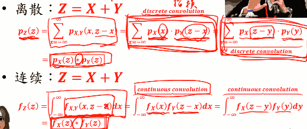
- 如果你知道X，Y的PMF，而且X，Y独立，那么X+Y的新的PMF就是等于 X的PMF，Y的PMF两个在做
- discrete convolution: pX(z)*pY(z)
如果有不止 两个随机变量？
- X = X₁+X₂+...+Xn
- 若 X₁+X₂+...+Xn 独立:
- 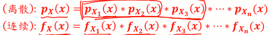
Convolution 很难算，怎么办?
- MGF !!!
- 如果你会用 MGF的话，哇，convolution 太简单了，甚至有时候算都不用算.
Example: Jack’s Car Rental
```python #!/usr/local/bin/python3 import numpy as np from scipy import stats """ Jack经营着一个租车公司。 每天借出的车数量 服从 POISSON( 4 ), 归还的车数量 服从 POISSON(2)。 如果某一天 Jack公司里共20辆车， 问第二天变成19辆车的概率。 """ def solution_sample(): nSample = 10000000 requests = np.random.poisson(4, nSample) returns = np.random.poisson( 2, nSample) # 借出的车，比归还的车多一辆 s = requests[requests - returns == 1] prob = len(s)/nSample return prob def solution_sum(): s = [ stats.poisson.pmf( i,4 )* stats.poisson.pmf( i-1,2 ) for i in range(20) ] return sum(s) if __name__ == '__main__': print( "solution sample: {}".format( solution_sample() ) ) print( "solution sum: {}".format( solution_sum() ) ) # solution sample: 0.1563523 # solution sum: 0.15640119832636357 ```9.2 MGF(MOMENT GENERATING FUNCTION)
- 先看个例子吧!辛苦的红娘业
- 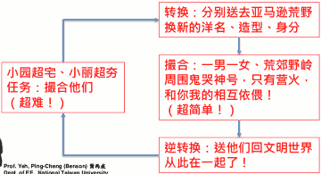
- 回到卷积
- 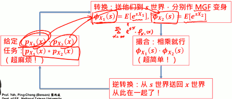
- 原来这个函数都是在x这个世界，因为他们都是x的函数，我们现在要把它转换到一个新世界S, MGF 就是在S世界改造出来的结果。
- 把 x 这个函数，转换过去变成s这个函数
- 我有 X₁的PMF了，我就可以算 X₁的任何函数的期望值了
- ΦX₁ = E[ esX₁ ] = ∑x=∞-∞esx·pX₁(x)
- 然后把 ΦX₁, ΦX₂ 相乘，再逆转换 就得到我们要的结果了。
- 为什么MGF可以做到这个？ 数据学推导出来的...
- MGF 也可以应用到多个随机变数和
- 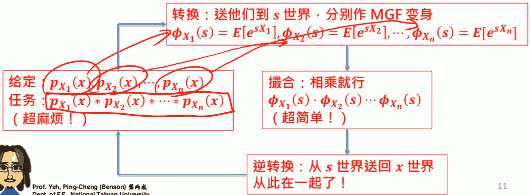
- 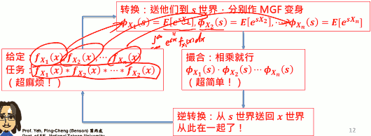
MGF
- MGF ɸX(s) 定义:
- 逆转换怎么做 ?
- MGF 和 期望值
- MGF 为什么叫 Moment Generating Function 呢
- 还记得什么叫 moment吗？ E[Xⁿ] 叫做 nth moment
- ɸX(s) 跟 moment 有关系吗 ?
- 离散case
- 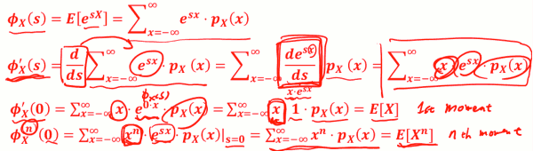
- 连续case
- 所以這是為什麼就叫 ɸX(s) 叫moment generating function, 因為只要有了它，你就可以生成任何一個moment，
- 重要性质: MGF导数 求 X的期望值！！
- MGF 为什么叫 Moment Generating Function 呢


Moment Generating Functions and Probability Distributions
Moment Generating Functions and Probability Distributions course
MFG重要性质
- MGF 怎么做运算
Y = aX + b
- = ɸY(s) = E[esY] = E[es(aX+b)]
- = E[esaX·esb]
- = esb·E[esaX]
- = esb · ɸX(as)
上面的期望值里，s不是随机变量，s只是一个变量,可以用期望值运算中拿出来
常见离散概率分布 之 MGF
- X~Bernoulli(p): pX(0) = 1-p, p(1)=p
- ɸX(s) = E[esX] = E[es·0]·p(0) + E[es·1]·p(1)
- = 1·(1-p) + es·p
- = 1-p + pes
- X~BIN(n,p): 做n次实验，成功的次数
- ⇒ X = X₁+X₂+ ... +Xn, Xᵢ独立，Xᵢ~Bernoulli(p)
- 原来 BIN的随机变数，可以表示成n个Bernoulli 随机变数之和
- ⇒ ɸX(s) = (1-p + pes)ⁿ
- ⇒ X = X₁+X₂+ ... +Xn, Xᵢ独立，Xᵢ~Bernoulli(p)
- X~Geometric(p):
- TODO
- X~Pascal(k,p): 看到第k次成功，花的总实验次数
- ⇒ X = X₁+X₂+ ... +Xn, Xᵢ独立，Xᵢ~Geometric(p)
- 第一次成功花了多少次 + 第2次成功花了多少次 + ... 第k次成功花了多少次
- TODO , ( ɸXᵢ(s) )ᵏ
- ⇒ X = X₁+X₂+ ... +Xn, Xᵢ独立，Xᵢ~Geometric(p)
- X~Poisson(a):
- TODO
- X~UNIF(a,b):

常见连续概率分布之 MGF
- X~Exponential(λ):
- TODO
X~Erlang(n,λ):
- ⇒ X = X₁+X₂+ ... +Xn, Xᵢ独立，Xᵢ~Exponential(p)
X~UNIF(a,b):
- TODO
- X~Gaussian(μ,σ): ( N( μ,σ² ) )
- eμs+σ/2·s²
9.3 多个随机变数之和
独立随机变数之和
- X₁,X₂, ...独立， 且各自都有一摸一样的概率分布，表示为
- {Xᵢ}, I.I.D
- Independently and Identically Distributed
X = X₁+X₂+ ... +Xn, n为常数, 请问X的几率分布?
- 离散: pX(x) = pX₁(x)pX₁(x)...*pX₁(x) (做卷积)
- 连续: fX(x) = fX₁(x)fX₁(x)...*fX₁(x) (做卷积)
- ɸX(s) = ( ɸX₁(s) )ⁿ
Ex: 将太的寿司
- 寿司饭团的理想重量是13g， 将太出当学徒，每次抓饭量为 正态分布，μ=14,σ=3。师傅要将太每天练习做 100个寿司才能休息，做完的寿司都得自己吃掉。请问将太每天吃的饭量的几率分布？
- Xᵢ: 第i个寿司的饭量，{Xᵢ} I.I.D.
- Xᵢ~N(14,9) ⇒ ɸX₁(s) = eμs+σ/2·s² = e14s+9/2·s²
- X = X₁+X₂+ ... +X₁₀₀
- ⇒ ɸX(s) = ( ɸX₁(s) )¹⁰⁰ = ( e14s+9/2·s² )¹⁰⁰ = e1400s+900/2·s² -> N(1400,900)
- ⇒ X~N(1400,900)
随机个数个 独立随机变数之和
- X₁,X₂,... I.I.D.
- X = X₁+X₂+ ... +XN
- 若N本身也是随机变数，其几率分布已知， 那X的几率分布找的到吗？
- N: pN(n) 已知
- 我们可以得到它的 MGF, 这里我们用 s֮ 来代替s ( 因为ɸX 会用到s )
- ⇒ ɸN(s֮) = ∑n=0∞ es֮n·pN(n)
ɸX = E[ esX ] = E[ esX₁ + esX₂ + ... + esXN ]
- = E[ esX₁ · esX₂ · ... · esXN ]
- N 虽然是个随机变量，但是你可以先把它留着，先把N当成一个常数
- 这N个东西相乘再取期望值， 可以变成 各自的期望值 相乘, 只要它们独立，就有这样的特性
- 但是因因为N是随机变量, 所以最好还要对 N 做一次取期望值
- = EN[ E[esX₁] · E[esX₂] · ... · E[esXN] ]
- = EN [ (ɸX₁(s))ᴺ ] = ∑n=0∞ (ɸX₁(s))ⁿ·pN(n)
- = ∑n=0∞ eln(ɸX₁(s))n ·pN(n)
- 当 s֮ = (ln ɸX₁(s) ), 则 ɸN(s֮) = ɸX
- = ɸN( ln ɸX₁(s) )
- 即，通过 N 和 X₁ 的MGF 可以合成 X 的MGF
- = E[ esX₁ · esX₂ · ... · esXN ]
EX: 如果不景气呢
- 因为不景气，师傅的生意有一搭没一搭，没那么多钱让将太挥霍。每天可以联系的寿司数量是有当天生意决定的。每天可以联系寿司数量是一个 Poisson分布，期望值为75； 将太功夫依然没有长进，每次抓的饭量为常态分布，μ=14,σ=4(退步了)。 请问将太每天吃的饭量的概率分布。
- N~POI(75) => ɸN(s֮) = e75(es֮ -1)</sup>
- X = X₁+X₂+ ... +XN, Xᵢ~ Norm(14,16) => ɸX₁(s) = e14s+8s²
- ɸX(s) = ɸN( ln ɸX₁(s) )
- = e75(eln ɸX₁(s) -1)</sup>
- = e75( ɸX₁(s) -1)
- = e75( e14s+8s² -1)</sup>
9.4 中央極限定理-萬佛朝宗
- 数个独立 UNIF 随机变量之和 的 PDF
- 数个独立 EXP 随机变量之和 的 PDF
数个独立 Laplace 随机变量之和 的 PDF
- 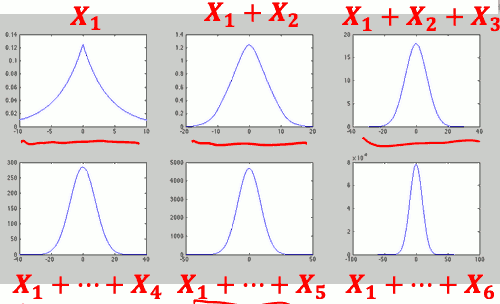
我们，如果是连续的随机变数， 你n个I.I.D 加起来以后，你新的PDF 看起来 会越来越像 常态分布。
数个独立 Uniform 离散随机变数之和
- 数个独立 Geometric 离散随机变数之和


- 中央极限定律 ( Central Limit Theorem )
- 若 X₁+X₂+ ... +Xn 为 I.I.D,
- 则当 n 越接近 ∞ 时:

中央极限定律(CLT)的应用
- 当要处理多个独立的随机变量I.I.D的 和时，我们可以 CLT 将其机率分布近似为 常态分布后计算机率
- 因为很多随机变数如果加在一起，你一定要去计算出exact概率分布，那它可能不好算
- 虽然可以使用 MGF，但有时候你逆转换做不出的话， 你就没有办法算出它的 PMF/PDF
- ex: 电路杂讯 ~N
另若某机率分布等同于多个独立随机变量 的和，此机率分布便可以用常态分布近似 之，再计算概率
- ex: X~BIN(100,0.3)
- X = X₁+X₂+ ... +X₁₀₀, {Xᵢ} I.I.D. , Xᵢ~Berinoulli(0.3)
- 会非常接近常态分布, 所以也可以使用 常态分布来 近似计算概率分布
- ex: X~BIN(100,0.3)
Ex: 天团五五六六有百万粉丝。每位粉丝各自独立， 但有 0.2 的机率会买天团发片的 CD。若是天团 发精选辑，请问天团精选辑发售超过 200800 张之机率为何?
- X~BIN( 1000000, 0.2 ) => P( X>200800 ) 计算量非常大
- X = X₁+X₂+ ... +X₁₀₀, {Xᵢ} I.I.D. , Xᵢ~Berinoulli(0.2)
- => μX = 0.2 * 1000000 = 200000
- => σ²X = 0.16 * 1000000 = 160000
- By CLT => X~N( 200000, 160000 )
- P(X>200800) = P( (X-200000)/400 > (200800-200000)/400 ) = P( Z > 2 ) ( Z ~N(0,1) )
- scipy
1 - stats.norm.cdf( 200800 , 200000, 400 ) >>> 0.02275013194817921 1 - stats.norm.cdf( 2 ) # N(0,1) >>> 0.02275013194817921 1 - stats.binom.cdf( 200800, 1000000 , 0.2 ) >>> 0.022723129753990712
若X是离散的随机变数和
- 我们可以算得更精确!
- De Moivre - Laplace Formula:
- 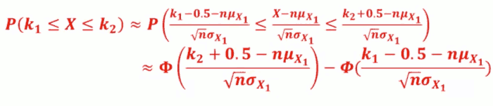
- 要计算 X 落在 k₁,k₂之间的几率，加一个修正项0.5， 不要直接算。 即 计算 k₁-0.5, k₂+0.5 之间的几率

- 这里ɸ是指norm cdf?
 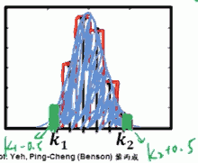
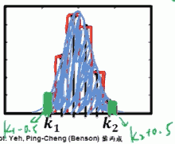- 加上 ±0.5, 把两个小绿块计算进去
- Ex: 萱萱为 5566 忠实粉丝，帮粉友去 20 家店 买 CD。每家店限购一张，缺货机率 0.5。 请问萱萱买到 7 张之机率为 ?
- X~BIN( 20, 0.5)
- => Xᵢ~Berinoulli(0.5)
- => X~N( 20*0.5, 20*0.25 ) = N(10,5)
- => P(7) = P(7≤X≤7) = 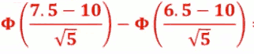
- scipy
>>> stats.binom.pmf( 7, 20, 0.5 ) 0.07392883300781268 >>> stats.norm.cdf( (7.5-10)/(5**0.5) ) - stats.norm.cdf( (6.5-10)/(5**0.5) ) 0.07301380459316678
- X~BIN( 20, 0.5)